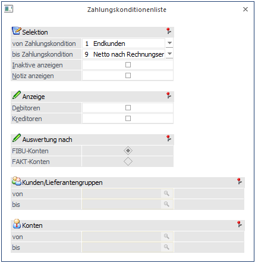
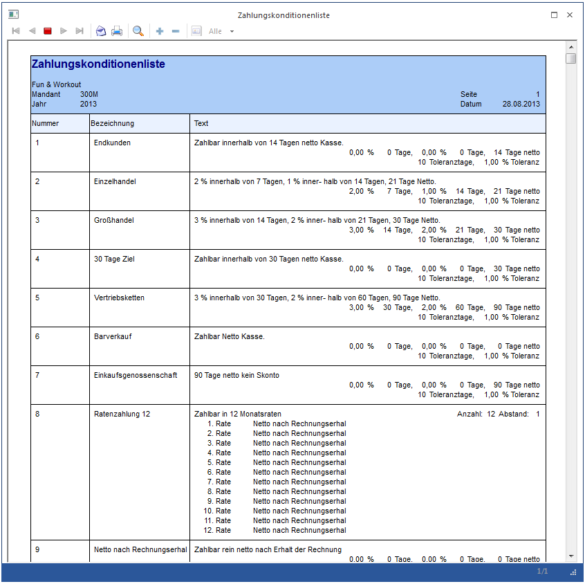
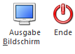

Die "Zahlungskonditionenliste" finden Sie in der WinLine FIBU im Menüpunkt
1 Auswertungen
1 Zahlungskonditionenliste.
Hier haben Sie die Möglichkeit, Zahlungskonditionen unter verschiedenen Selektionskriterien auszuwerten.

Ø von Zahlungskondition / bis Zahlungskondition
Einschränkung der Ausgabe auf einen bestimmten Zahlungskonditionenbereich. Über den Matchcode kann nach allen angelegten Zahlungskonditionen gesucht werden.
Ø Inaktive anzeigen
Durch Aktivieren dieser Option können auch die Zahlungskonditionen ausgewertet werden, die im Stamm bereits das Kennzeichen für "inaktiv" gesetzt haben.
Ø Notiz anzeigen
Ist in der Zahlungskondition eine zusätzliche Notiz (im dafür vorgesehenen Feld) hinterlegt, so kann diese durch Aktivieren dieser Option ebenfalls mit ausgegeben werden.
Ø Anzeige
Durch Aktivieren der Optionen "Debitoren" und/oder "Kreditoren" kann bestimmt werden ob zu den jeweiligen Zahlungskonditionen jene Konten mit angezeigt werden, die diese Zahlungskondition hinterlegt haben.
Ebenfalls durch Aktivieren dieser Optionen können weitere Selektionskriterien festgelegt werden:
ü Auswertung nach FIBU-Konten oder FAKT-Konten
ü Eingrenzung auf Kunden/Lieferantengruppen
ü Eingrenzung auf Personenkonten

Buttons

Ø Ausgabe Bildschirm /Ausgabe Drucker
Es kann entschieden werden, ob die Auswertung am Bildschirm oder Drucker ausgegeben werden soll.
Ø Ende
Durch Drücken des Ende-Buttons wird das Fenster geschlossen